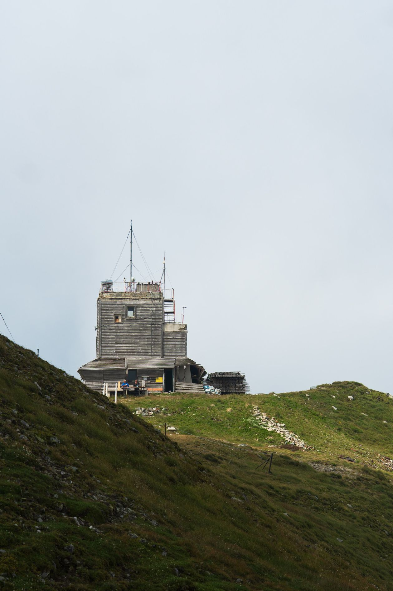
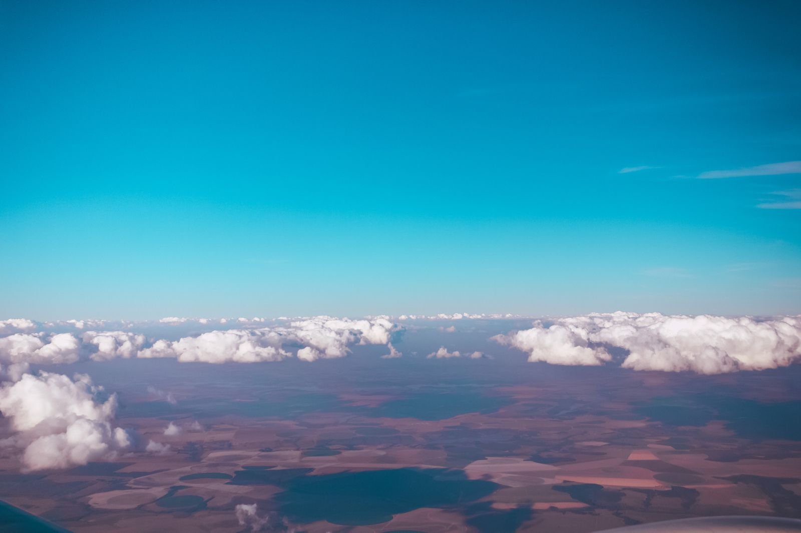

03
the working page
About & method
The physicist, thenthe working page
Dr Anouk Verhoeven trained as a physicist in the Netherlands — a doctorate in atmospheric physics, with the postdoctoral years spent inside university and national-laboratory instrument teams in the Netherlands and Scandinavia. The through-line of that decade was not an instrument or a site; it was watching good campaigns fail at the same joint.
The joint is the calibration chain: the unglamorous sequence that connects a counter's dial to a physical supersaturation. When it is owned by nobody, two honest instruments on the same air stream publish two different skies — and the argument that follows is billed to the science. This practice, independent since 2016, exists to own that joint: one scientist, one calibration record, spectra that a modelling group can use without a private correction factor.
The work divides into chamber characterisation, airborne profiling on facility aircraft, and intercomparison — with ground-site support for the observatories that keep the long records everyone else calibrates against. Engagements are taken one at a time; a campaign in the field is never run alongside another.
Terms, plainly
Campaigns are booked against a written scope, and mobilisation is invoiced at booking. Platform costs — aircraft hours, facility time — are passed through at cost with the provider's invoices attached; they are never marked up. Data belongs to the client on payment, including the null results. The practice asks to be named in methods sections, and will not block or delay publication because a result came out empty.

03·M
No stage is skippable
How a campaign runs
Five stages, in orderNo stage is skippable
01
The question firstWhat decision must the numbers carry? If a chamber week answers it, no aircraft is booked. Campaigns are sized to the question, not to the available platform.
02
Calibration before aerosolThe counter's supersaturation scale is verified against a reference salt before any sample is measured — and the verification travels with the data, in the same file.
03
Blanks and repeatsFiltered-air blanks bracket every run day. A spectrum that cannot repeat on a second day is not reported as a spectrum; it is reported as an observation, labelled as one.
04
Intercomparison where it mattersAt least once per campaign, a second instrument breathes the same air stream. Disagreement is investigated on site, while it can still be fixed — not discovered in the write-up.
05
The written recordSpectra, quality flags and the full calibration history are delivered together. What the data cannot support is stated in the same document, in the same size of type.
The honesty page
- A teaching model is not the atmosphere. Model M1 on the home page applies one printed linear rule so the shape of activation is legible. Campaign work uses κ-Köhler analysis over measured size distributions — slower, less tidy, and the only version that goes in a report.
- Activation in a chamber is not a cloud forecast. A spectrum constrains one term of cloud formation. Updraft speed, entrainment and the rest of the sky are not in the chamber, and no deliverable from this practice will pretend they are.
- A spectrum is a range, not a point. Every delivered spectrum carries its repeat scatter. Single-line parameterisations, however convenient for a model, are refused.
- Null results are results. A campaign that finds no activation where activation was expected has measured something. It is reported with the same care, and the fee does not depend on the answer.
